El paquete ggplot2(Wickham 2016) es parte del ecosistema tidyverse y se autodefine como una librería para “crear elegantes visualizaciones de datos utilizando una gramática de gráficos”. Proporciona una forma intuitiva de construir gráficos basada en The Grammar of Graphics a través de un sistema basado en tres componentes básicos:
datos
coordenadas
objetos geométricos
La estructura para construir un gráfico es la siguiente:
5.2 Anatomía de gráficos con ggplot2
La construcción de gráficos en ggplot2 se organiza a partir de una gramática que puede entenderse a través de sus componentes fundamentales:
data: el conjunto de datos que vamos a graficar, debe contener toda la información necesaria.
aes(): el mapeo estético (aesthetic mapping) es donde se declaran las variables que se representarán en el gráfico (por ejemplo, los ejes X e Y o cómo se asignarán los colores).
geoms: representaciones gráficas de los datos (puntos, líneas, barras, cajas, etc.). Son las “geometrías” que dibujan el gráfico.
stats: transformaciones estadísticas sobre los datos (medias, regresiones, suavizados, etc.), que permiten resumir la información.
scales: controlan cómo se representan los datos (ejes, colores, leyendas).
coordinate systems: sistema de coordenadas utilizado para representar el gráfico en un plano bidimensional.
facets:permiten dividir los datos en subconjuntos y generar gráficos en paneles (viñetas).
theme: controla la apariencia general de los elementos no asociados a los datos (fondos, tipografías, bordes, etc.).
Ejemplo con datos
Antes de mostrar como usar estos componentes, cargaremos la base de datos “facultad.csv”, que contiene datos ficticios sobre ingresantes a una facultad (por ejemplo, sexo, edad, talla y peso). Este conjunto se utilizará en los ejemplos:
# Cargar datosfacultad <-read_csv("datos/facultad.csv")# Mostramos las 6 primeras observacioneshead(facultad)
# A tibble: 6 × 18
hc sexo edad ant_diabetes ant_tbc ant_cancer ant_obesidad ant_ecv ant_ht
<dbl> <chr> <dbl> <chr> <chr> <chr> <chr> <chr> <chr>
1 26880 M 17 NO NO NO SI NO SI
2 26775 M 18 SI NO NO NO NO NO
3 26877 M 18 SI NO SI NO NO SI
4 26776 M 18 NO NO NO SI SI NO
5 26718 M 18 NO NO NO NO NO SI
6 26738 M 18 NO NO NO NO NO SI
# ℹ 9 more variables: ant_col <chr>, fuma <chr>, edadini <dbl>, cantidad <dbl>,
# col <dbl>, peso <dbl>, talla <dbl>, sist <dbl>, diast <dbl>
Mapeo estético
La función básica para construir un gráfico en ggplot2 es ggplot(), que crea una estructura inicial (vacía) a la que le irán agregando capas. Anteriormente dijimos que la función aes() define el contenido estético del gráfico, es decir, indica cómo se representan visualmente las variables (posición, color, tamaño, forma, etc.).
Es importante notar que: - Si aes() se incluye dentro de ggplot(), el mapeo se aplica a todas las capas. - Si se incluye dentro de una geometría, se aplica solo a esa capa. - aes() genera automáticamente leyendas cuando corresponde.
Veamos cómo funciona y cuáles son sus implicancias:
facultad |># solo la capa estética aes()ggplot(aes(x = talla, y = peso))
Este código genera un gráfico vacío que contiene únicamente los ejes definidos (peso y talla), pero aún no muestra los datos.
Capas geométricas
Para visualizar los datos, es necesario agregar capas geométricas mediante funciones geom_. Estas representan los objetos gráficos que se dibujan en el gráfico.
Las capas se agregan utilizando el operador +:
facultad |># mapeo estéticoggplot(aes(x = talla, y = peso)) +# agregamos la capa geométrica de puntosgeom_point()
Podemos diferenciar los puntos según sexo incorporando esa variable al mapeo estético:
facultad |># mapeo estéticoggplot(aes(x = talla, y = peso, color = sexo)) +# agregamos la capa geométrica de puntosgeom_point()
También es posible superponer capas. Por ejemplo, agregar rectas de regresión:
facultad |># mapeo estéticoggplot(aes(x = talla, y = peso, color = sexo)) +# agregamos la capa geométrica de puntosgeom_point() +# agregamos una segunda capa geométrica para la recta de regresióngeom_smooth(method ="lm")
La función geom_smooth() permite aplicar distintos métodos de ajuste. En este caso, "lm" indica una regresión lineal, incluyendo su intervalo de confianza.
Algunas de las capas geométricas más utilizadas son:
Histogramas: geom_histogram()
Gráfico de caja y bigotes (boxplot): geom_boxplot()
Gráfico de barras: geom_bar()
Gráfico de columnas: geom_col()
Gráfico de puntos (scatter plot): geom_point() o geom_jitter()
Gráfico de líneas: geom_line() o geom_path()
Gráfico de violín: geom_violin()
Tendencias: geom_smooth()
Curvas de densidad: geom_density()
Todas estas funciones pueden aplicarse sobre los mismos datos, y su uso depende del objetivo del análisis. Las capas se grafican secuencialmente, de modo que la última geometría en añadirse aparece adelante.
A continuación, algunos ejemplos para visualizar la relación entre sexo y talla utilizando distintas capas geométricas:
# Gráfico de puntosfacultad |>ggplot(aes(x = sexo, y = talla, color = sexo)) +# capa geométrica de puntosgeom_point()
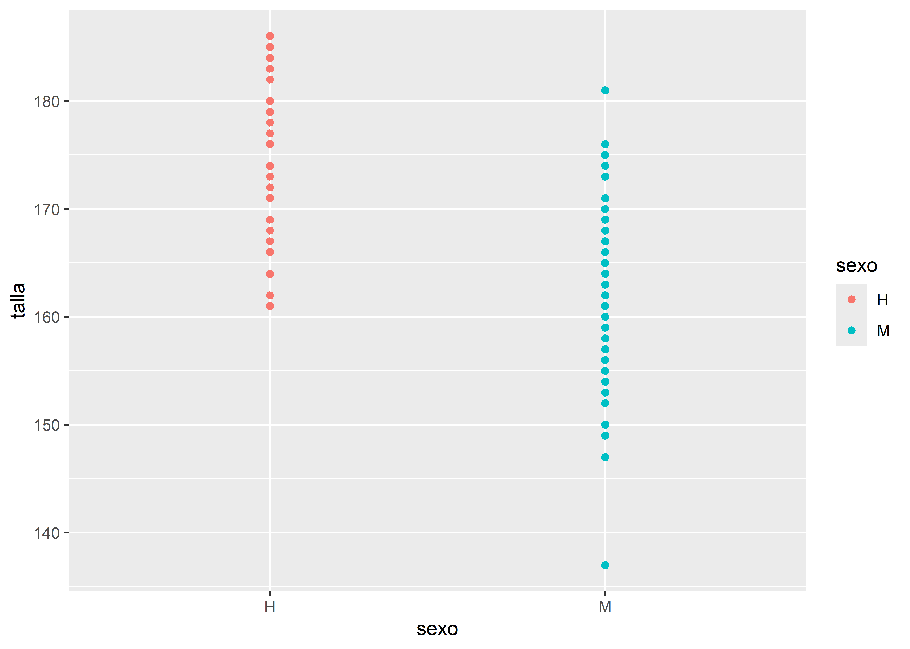
# Boxplotfacultad |>ggplot(aes(x = sexo, y = talla, color = sexo)) +# capa geométrica de boxplotgeom_boxplot()
# Entramado de puntosfacultad |>ggplot(aes(x = sexo, y = talla, color = sexo)) +# capa geométrica jitter (entramado de puntos)geom_jitter()
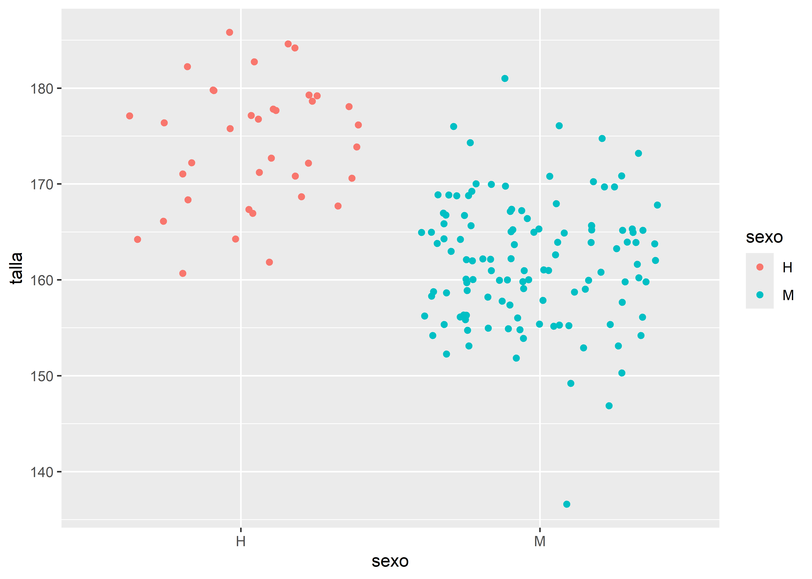
# Gráfico de violínfacultad |>ggplot(aes(x = sexo, y = talla, fill = sexo)) +# capa geométrica de violingeom_violin()
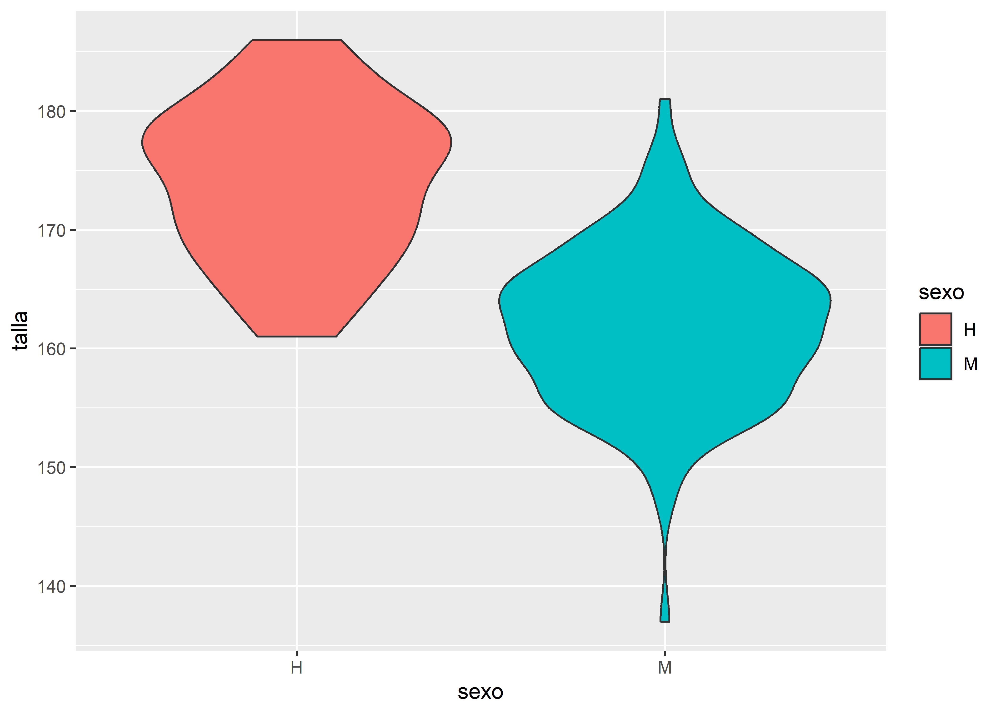
En el último caso se utiliza fill en lugar de color. Mientras color controla el contorno, fill define el relleno de las geometrías.
Estéticas estáticas y dinámicas
En ggplot2, las estéticas son propiedades visuales asociadas a los datos en las capas geométricas. No incluyen elementos como títulos o etiquetas.
Algunas estéticas frecuentes:
color / colour
fill
alpha
size
linewidth / lwd
linetype/ lty
Valores estáticos
Si queremos que todas las observaciones tengan una misma estética, colocamos los argumentos por fuera de aes():
facultad |>ggplot(aes(x = sexo, y = talla)) +# capa geométrica de puntosgeom_point(color ="purple", # Color de los puntossize =5, # Tamaño de los puntosalpha = .5# Transparencia de los puntos )
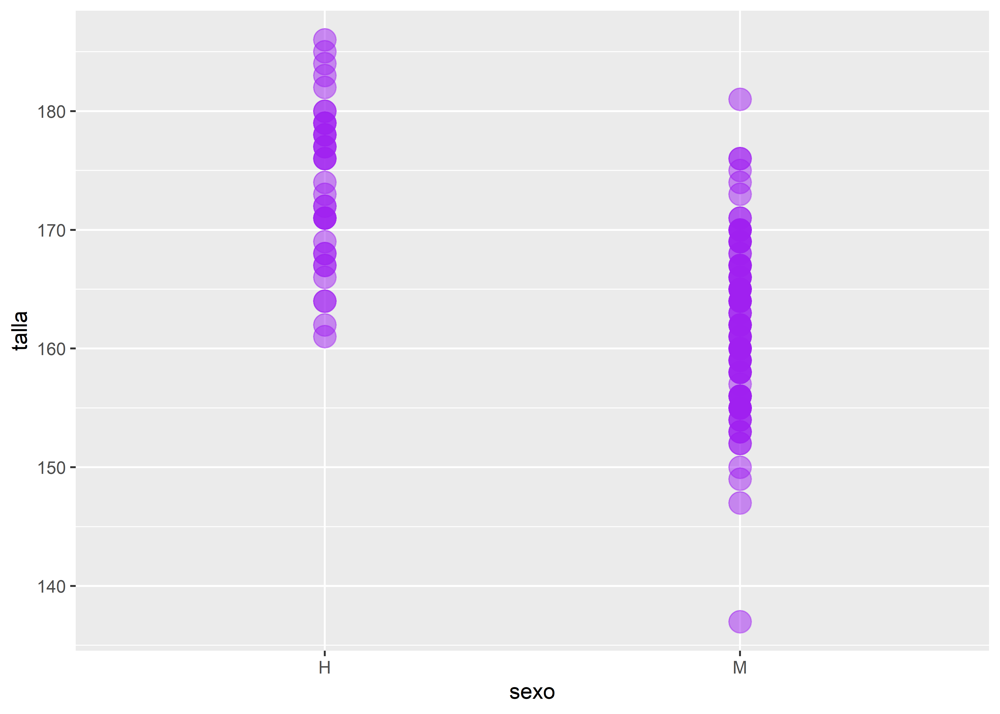
Valores dinámicos
Se definen dentro de aes() y aplican a todas las capas:
facultad |># Mapeo estéticoggplot(aes(x = talla, y = peso, color = sexo)) +# agregamos la capa geométrica de puntosgeom_point() +# agregamos una segunda capa geométrica para la recta de regresióngeom_smooth(method ="lm")
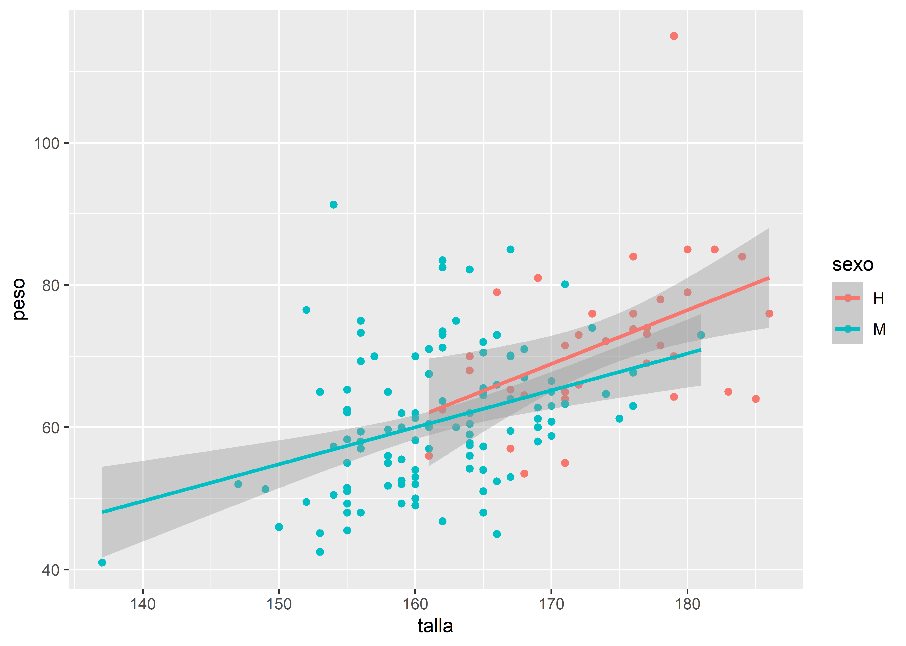
En este otro ejemplo, el color por sexo solo se aplica a los puntos de geom_point(), mientras que la regresión se calcula sobre el conjunto completo:
facultad |># mapeo estéticoggplot(aes(x = talla, y = peso)) +# agregamos la capa geométrica de puntos coloreada por sexogeom_point(aes(color = sexo)) +# agregamos una segunda capa geométrica para la recta de regresióngeom_smooth(method ="lm")
Este comportamiento permite una gran flexibilidad al construir gráficos, definiendo qué capas responden a cada mapeo estético.
5.3 Personalización de escalas
El sistema de escalas en ggplot2 permite ajustar distintos aspectos visuales de un gráfico, como colores de contorno y relleno, ejes, tamaños y tipos de línea, entre otros.
Todas las funciones asociadas a escalas comienzan con el prefijo scale_, seguido del atributo que se desea modificar (por ejemplo, scale_fill_ para el color de relleno).
Escalas de colores
A continuación, se presentan algunos ejemplos utilizando el conjunto de datos facultad:
facultad |>ggplot(aes(x = sexo, y = talla, fill = sexo)) +# capa geométrica boxplotgeom_boxplot() +# paleta de naranjasscale_fill_brewer(palette ="Oranges")
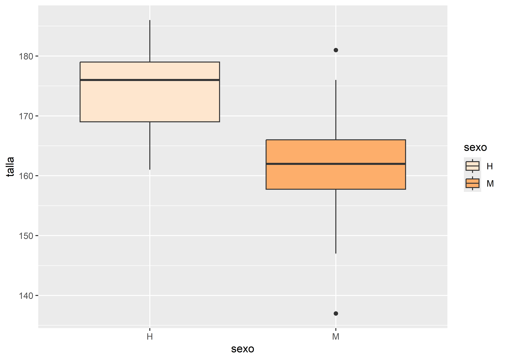
En este ejemplo, se aplica la función scale_fill_brewer(), que utiliza una paleta de colores (en este caso, "Oranges") y se vincula con el argumento fill definido en aes(), determinando el color de relleno del boxplot.
Otra alternativa es utilizar una escala de grises mediante scale_fill_grey():
facultad |>ggplot(aes(x = sexo, y = talla, fill = sexo)) +# capa geométrica boxplotgeom_boxplot() +# paleta en escala de grisesscale_fill_grey(start =0.4, end =0.8)
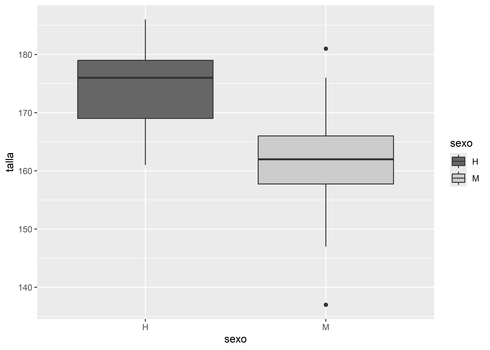
Se recomienda trabajar con paletas de colores accesibles para personas con daltonismo y otras dificultades en la percepción visual, como las incluidas en las dependencias RColorBrewer y viridisLite, así como en paquetes específicos con paletas colorblind-friendly, como scico(Pedersen y Crameri 2018) y cols4all(Tennekes y Puts 2023).
En versiones recientes de ggplot2, varias funciones de escala permiten utilizar el argumento aesthetics, que facilita aplicar una misma escala a múltiples estéticas simultáneamente. Esto resulta especialmente útil cuando queremos usar una misma paleta de colores tanto para el contorno (color) como para el relleno (fill).
Retomando el ejemplo anterior:
facultad |>ggplot(aes(x = sexo, y = talla, fill = sexo, color = sexo)) +# capa geométrica boxplotgeom_boxplot() +# paleta en escala viridisscale_fill_viridis_d(name ="Género",aesthetics =c("fill", "color") )
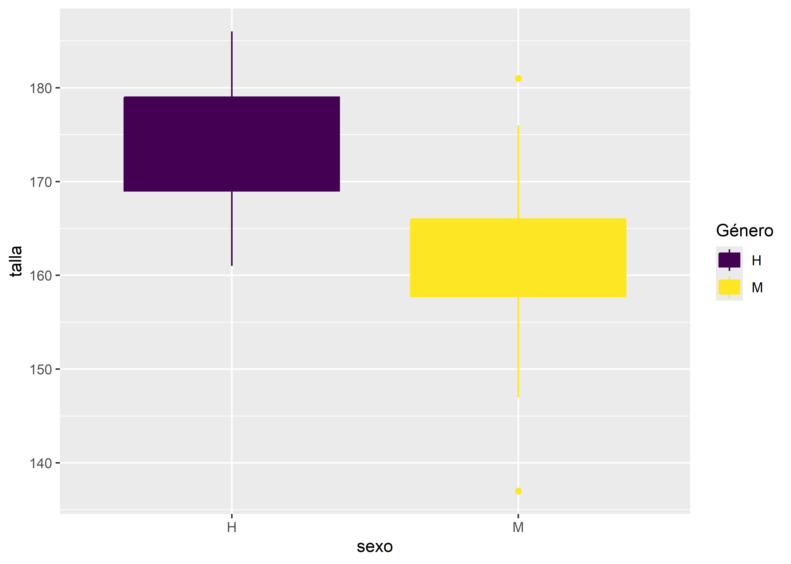
En este caso, la paleta "viridis" se aplica simultáneamente al relleno y al contorno de las cajas, evitando inconsistencias visuales entre ambas estéticas.
Sin aesthetics los colores de relleno y de línea deberían especificarse como:
# paleta en escala viridisscale_fill_viridis_d(name ="Género") +scale_color_viridis_d()
Lo que duplica código y puede desincronizar los cambios en una paleta.
Escalas de ejes
También es posible modificar las escalas de los ejes. Por ejemplo, invertir el eje X con scale_x_reverse():
facultad |>ggplot(aes(x = talla, y = peso, fill = sexo)) +# capa geométrica de puntosgeom_point() +# invierte el eje xscale_x_reverse()
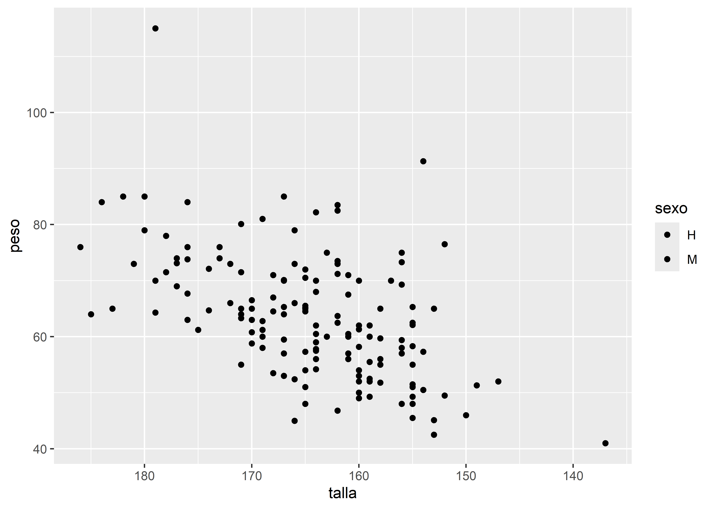
La inclusión de scale_x_reverse() provoca que la variable talla se muestre en orden descendente (de mayor a menor).
Por último, se pueden personalizar los cortes del eje Y mediante scale_y_continuous(). En el siguiente ejemplo, se define que el eje Y vaya de 130 a 200 cm, con marcas cada 10 unidades:
facultad |>ggplot(aes(x = sexo, y = talla, fill = sexo)) +# capa geométrica boxplotgeom_boxplot() +# paleta en escala de grisesscale_fill_grey(start =0.4, end =0.8) +# puntos de corte del eje Yscale_y_continuous(limits =c(130, 200), # límitesbreaks =seq(130, 200, 10) ) # nro de etiquetas
5.4 Transformaciones estadísticas
En ggplot2, algunos gráficos no requieren transformaciones estadísticas explícitas, como los gráficos de dispersión. Sin embargo, otros —como histogramas, boxplots o curvas de tendencia— incorporan transformaciones estadísticas implícitas que pueden modificarse o personalizarse.
Estas transformaciones pueden:
estar integradas dentro de las funciones geométricas (geom_)
agregarse como capas independientes mediante funciones stat_
Por ejemplo, en un histograma la transformación estadística consiste en agrupar los datos en intervalos (clases) y contar las observaciones en cada uno. Esta transformación está incluida en geom_histogram(), pero puede parametrizarse:
facultad |>ggplot(aes(edad)) +# capa geométrica histogramageom_histogram(bins =nclass.Sturges(facultad$edad), fill ="Blue")
En este caso, se utiliza la regla de Sturges —a través de nclass.Sturges()— para determinar automáticamente la cantidad de clases de la variable edad.
También es posible agregar transformaciones estadísticas como capas adicionales. Por ejemplo, si queremos mostrar la media de talla para cada grupo de sexo sobre un boxplot, podemos utilizar stat_summary():
La función stat_summary() permite calcular estadísticas (como mean, median, sd, entre otras) y representarlas mediante una geometría. En este caso, la media de talla se muestra como un punto rojo oscuro (color = "darkred"), con forma romboidal (shape = 18) y tamaño destacado (size = 3).
5.5 Facetado
El facetado permite dividir un gráfico en múltiples paneles (o viñetas) según los niveles de una o más variables categóricas. Esto resulta especialmente útil para comparar patrones entre grupos sin sobrecargar un único gráfico.
En ggplot2 existen dos funciones principales para implementar esta técnica:
facet_wrap(): divide los datos según una única variable categórica, generando paneles dispuestos automáticamente en filas y columnas.
facet_grid(): permite crear una matriz de paneles a partir de dos variables categóricas, una definida en las filas y otra en las columnas.
Retomemos el gráfico de dispersión entre talla y peso, y generemos paneles separados para cada nivel de la variable sexo usando facet_wrap():
facultad |>ggplot(aes(x = talla, y = peso, color = sexo)) +# capa geométrica de puntosgeom_point() +# separa en paneles por sexofacet_wrap(~sexo)
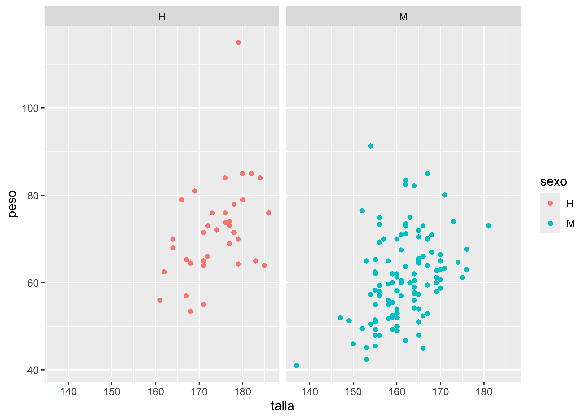
Ahora utilizamos facet_grid() para crear una matriz de histogramas a partir del cruce de las variables sexo y fuma. En cada panel se representa la distribución de peso:
facultad |>ggplot(aes(y = peso, fill = sexo)) +# capa geométrica histogramageom_histogram(bins =nclass.Sturges(facultad$peso)) +# paleta de coloresscale_fill_brewer(palette ="Set2") +# separa en paneles por sexo y fumafacet_grid(sexo ~ fuma)
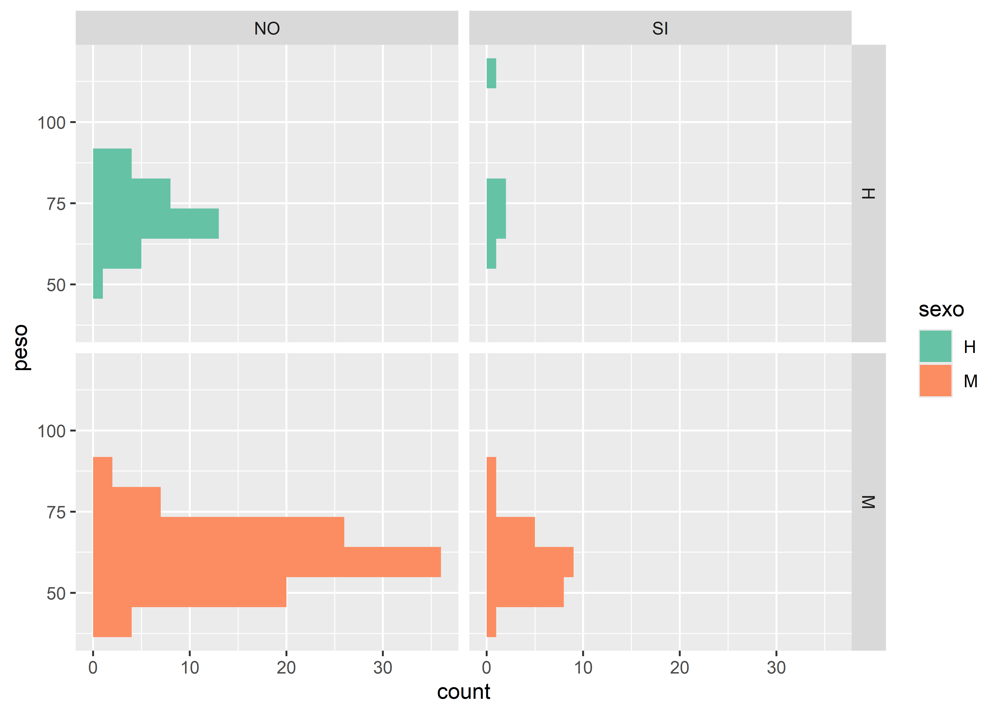
Como se observa en estos ejemplos, el facetado se integra naturalmente con otros componentes de la gramática de gráficos: mapeo estético (aes()), capas geométricas (geom_) y escalas (scale_).
El número de combinaciones posibles es muy amplio, dada la flexibilidad de ggplot2. Sin embargo, el objetivo de este material es comprender los principios fundamentales sobre los que se construye esta gramática de los gráficos.
5.6 Sistema de coordenadas
En algunos casos, puede ser útil modificar el sistema de coordenadas predeterminado de un gráfico. Mientras que las funciones scale_ controlan cómo se representan los datos, las funciones de coordenadas (coord_) modifican cómo se visualiza el espacio del gráfico.
En ggplot2 una de las transformaciones más comunes es invertir la orientación de los ejes mediante coord_flip(), lo que resulta útil, por ejemplo, para presentar gráficos de barras en forma horizontal:
facultad |>ggplot(aes(sexo, fill = sexo)) +# capa geométrica barrasgeom_bar() +# paleta de coloresscale_fill_brewer(palette ="Set2") +# invierte disposición de ejescoord_flip()
5.7 Temas
ggplot2 incluye un conjunto de temas gráficos predefinidos que permiten modificar el aspecto general del gráfico. El tema por defecto es theme_gray(), pero puede cambiarse agregando una capa theme_*() dentro del gráfico.
Repetimos el gráfico anterior, esta vez utilizando el tema blanco y negro (theme_bw()):
facultad |>ggplot(aes(sexo, fill = sexo)) +# capa geométrica barrasgeom_bar() +# paleta de coloresscale_fill_brewer(palette ="Set2") +# invierte disposición de ejescoord_flip() +# tema en blanco y negrotheme_bw()
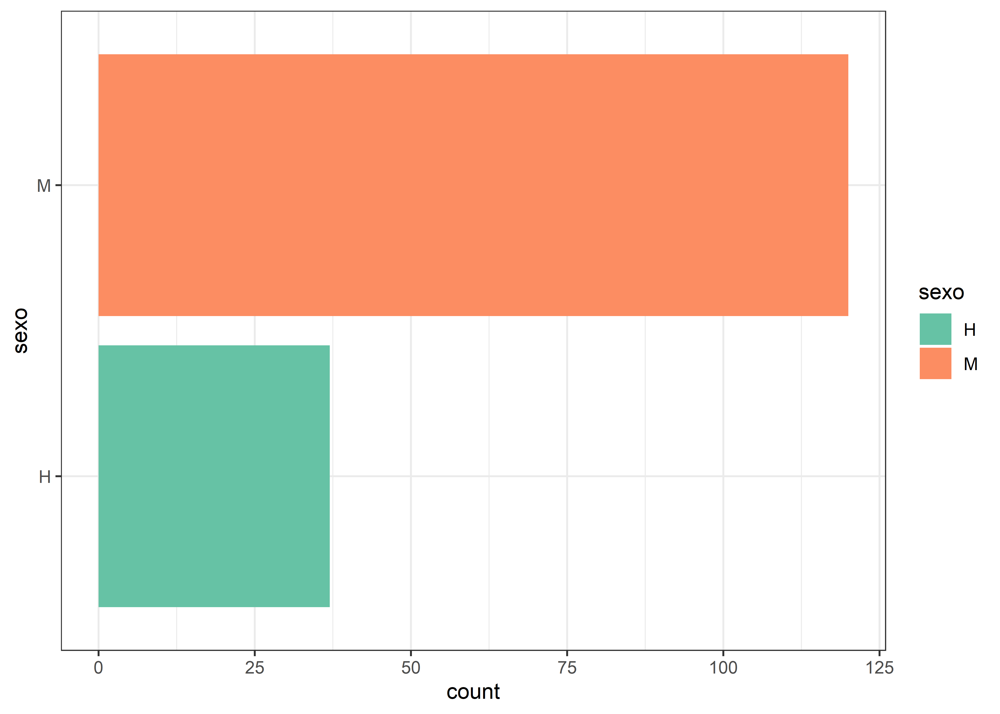
También podemos aplicar un tema de fondo oscuro con theme_dark():
facultad |>ggplot(aes(sexo, fill = sexo)) +# capa geométrica barrasgeom_bar() +# paleta de coloresscale_fill_brewer(palette ="Set2") +# invierte disposición de ejescoord_flip() +# tema con fondo oscurotheme_dark()
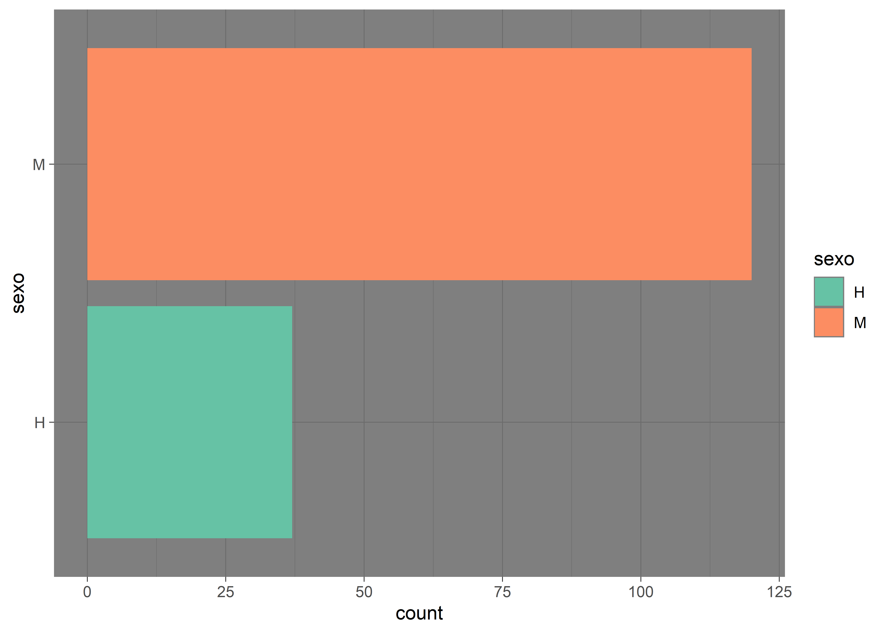
A continuación se muestra un cuadro con los principales temas disponibles en ggplot2 y sus características visuales:
Además del aspecto general del gráfico, es posible agregar títulos, subtítulos y etiquetas de ejes con la función labs(). Por ejemplo:
labs(x ="Etiqueta X",y ="Etiqueta Y",title ="Título del gráfico",subtitle ="Subtítulo del gráfico")
También se pueden ajustar detalles del texto, como tipo de fuente o tamaño, mediante la función theme():
facultad |>ggplot(aes(sexo, fill = sexo)) +# capa geométrica barrasgeom_bar() +# paleta de coloresscale_fill_brewer(palette ="Set2") +# invierte disposición de ejescoord_flip() +# cambia etiquetas de los ejeslabs(y ="Cantidad", title ="Distribución de sexo") +# modifica el estilo de fuente del títulotheme(plot.title =element_text(face ="italic", size =16))
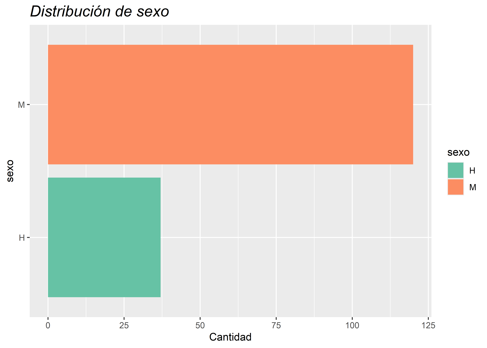
5.8 Paquete esquisse
El paqueteesquisse(Meyer y Perrier 2018) es una extensión de ggplot2 que permite crear gráficos de manera interactiva, mediante una interfaz gráfica intuitiva basada en el sistema de arrastrar y soltar (drag & drop).
Con esquisse es posible:
Explorar visualmente los datos según su tipo.
Asignar variables a diferentes estéticas del gráfico (ejes, color, tamaño, etc.).
Exportar los resultados en distintos formatos.
Recuperar el código R que genera el gráfico, facilitando su reproducción y modificación.
El paquete se instala mediante el menú Packages de RStudio o ejecutando:
install.packages("esquisse")
Luego se puede acceder a la aplicación por medio del acceso Addins:
o ejecutando en consola:
esquisser()
También se puede agregar el nombre de la tabla de datos dentro de los paréntesis
esquisser(datos)
Para más detalles, se puede consultar la viñeta del paquete disponible en CRAN o en su repositorio de GitHub.
5.9 Extensiones de ggplot2
Una de las grandes fortalezas de ggplot2 es su ecosistema de extensiones. Hasta el momento, existen más de 158paquetes desarrollados para ampliar sus funcionalidades, muchos de ellos diseñados para facilitar tareas específicas o agregar nuevas capas, geometrías, temas, escalas o herramientas interactivas.
Algunas de las extensiones que utilizaremos durante el curso son:
patchwork(Pedersen 2019): permite combinar múltiples gráficos de ggplot2 en una misma figura de forma sencilla y controlada.
GGally(Schloerke et al. 2010): extiende ggplot2 con funciones para crear matrices de gráficos (como ggpairs()), útiles para análisis exploratorio multivariado.
ggpubr(Kassambara 2016): facilita la creación de gráficos listos para publicar, con funciones simplificadas para agregar títulos, etiquetas, comparaciones estadísticas y anotaciones.
see(Lüdecke et al. 2021): ofrece temas, paletas de colores y escalas compatibles con personas con daltonismo, además de geometrías personalizadas.
survminer(Kassambara et al. 2016): diseñado para la visualización de análisis de supervivencia (como curvas de Kaplan-Meier) utilizando ggplot2.
ggfortify: permite graficar objetos estadísticos como modelos lineales, PCA o series temporales sin necesidad de escribir código ggplot2 desde cero.
Estas extensiones permiten ampliar la flexibilidad y expresividad gráfica de ggplot2 sin perder la estructura gramatical que lo caracteriza.
Lüdecke, Daniel, Indrajeet Patil, Mattan Ben-Shachar, Brenton Wiernik, Philip Waggoner, y Dominique Makowski. 2021. «see: An R Package for Visualizing Statistical Models». Journal of Open Source Software 6 (64): 3393. https://doi.org/10.21105/joss.03393.
Tennekes, Martijn, y Marco Puts. 2023. «cols4all: a Color Palette Analysis Tool». EuroVis 2023 - Short Papers, 37-41. https://doi.org/10.2312/EVS.20231040.
Wickham, Hadley. 2016. ggplot2: Elegant Graphics for Data Analysis. Springer-Verlag New York. https://ggplot2.tidyverse.org.
![]()